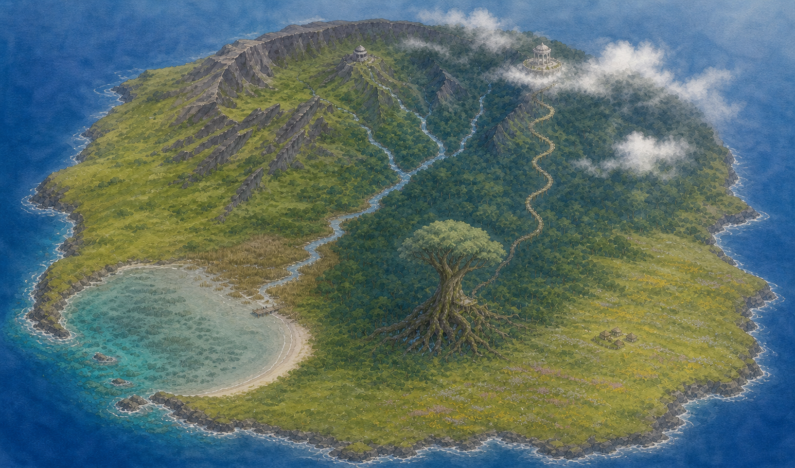

ことば島
ことばじま
座標正本SVG + route spline v2
座標地形が正本。水彩v2は比較用の雰囲気レイヤーであり、線を画像へ合わせない。
水彩比較
座標地形
Stage 1–12
Stage 13–36
216 anchor
緯度経度

黄実線 Stage 1–12 ／ 紫破線 Stage 13–36 ／ 六角 章境界 ／ 小丸 scenicAnchor ／ 橙 上昇・青 下降。
水彩v2の螺旋路は未承認。座標地形と合わない箇所は水彩側の修正対象。